A tymczasem w Cameracie...
.
2014-01-18
Przychodzę dużo wcześniej na prośbę dyrygentki Izabeli Szoty (ona nie może, bo ma konferencję), aby pomóc w przygotowaniu miejsc dla chórów, które oprawiają muzycznie Pastorałkę wielicką. Próba aktorska trwa, wszyscy aktorzy pastorałki na miejscu a jacy radośni. Ten jeden, to mi chyba grozi???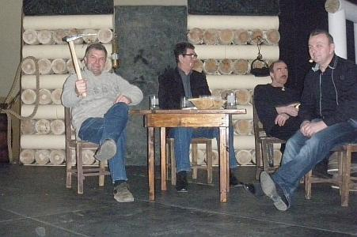 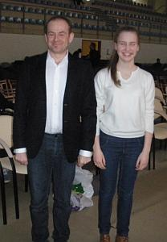
Przyszła już też dyrygentka i od razu zabrała się do pracy. Trzeba wszystko ogarnąć muzycznie, gdyż zaraz przyjdą chóry.
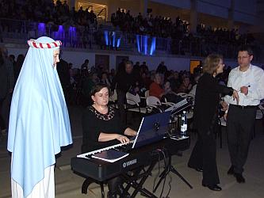
Teraz szybka próba z Marią, którą przygotowywała do występu Izabela Szota, co nie trudno zauważyć na zdjęciach:)
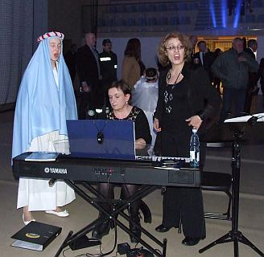 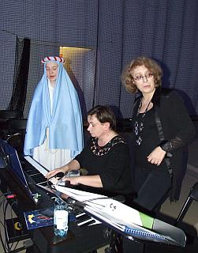
Przy okazji i Józefowi również podpowiedziała małe „słówko” jak śpiewać.
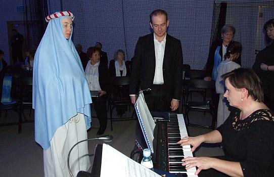
Już zbierają się chóry. Zaraz krótka próba i koncert.
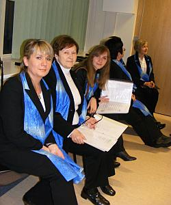 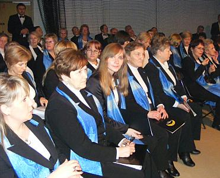 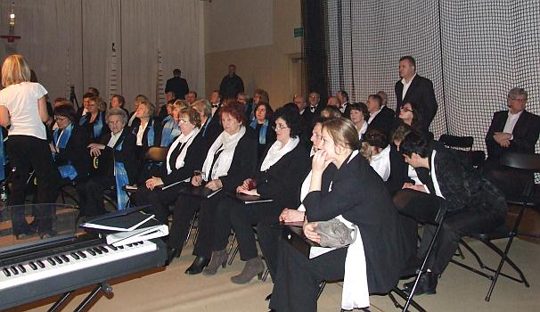
Zaczynamy koncert chórów:
Chór im. Jana Pawła II ze Strumian, Chór Towarzystwa Śpiewaczego „Lutnia”, Stowarzyszenie Muzyczne - Chór Camerata
oraz „Wielicka Orkiestra Kameralna”, którymi podczas koncertu dyrygował Piotr Piwko - dyrygent chóru im. Jana Pawła II ze Strumian.
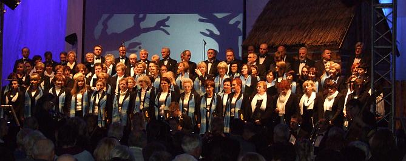 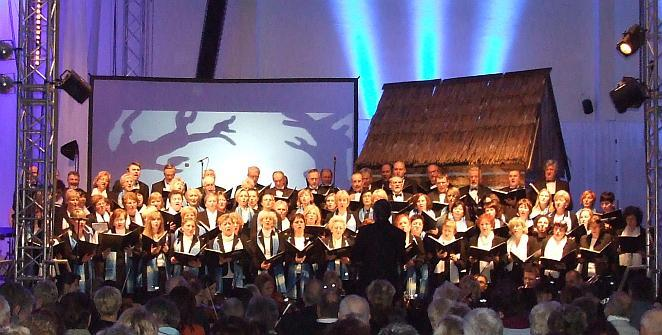
Koncert wypadł wspaniale. Otrzymaliśmy gromkie brawa, ale nie ma czasu na zastanawianie się nad koncertem, bo już zaczyna się pastorałka. Tutaj nad wszystkim „muzycznie” czuwa nasza dyrygentka Izabela Szota. Wszystkie chóry śpiewają pod jej dyrygenturą, akompaniuje Agnieszka Korczyńska. Ludzi w chórze dużo a nie ma schodów, żeby wszyscy widzieli dyrygentkę weszła na jakieś wielkie pudło :)
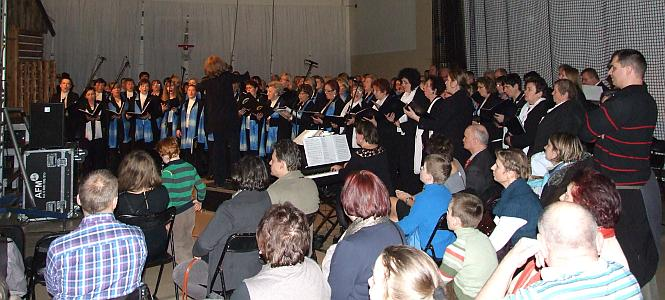 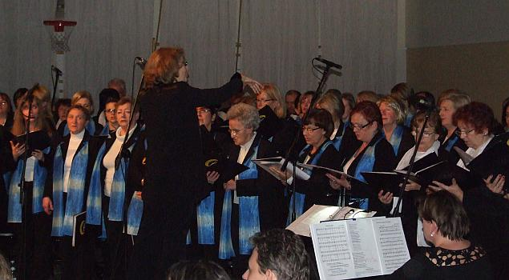
Kończy się występ. Jesteśmy zmęczeni, ale zadowoleni, bo fajnie wyszło.
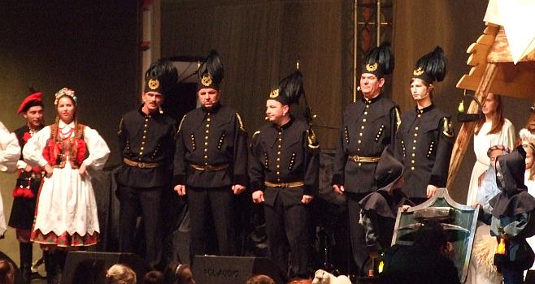
A to nasz kolega z chóru Marek-bas i najmłodszy aktor, ale jak grał!!!
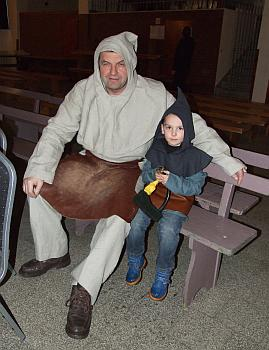
Na koniec wspaniała niespodzianka, odwiedził nas Adaś – nasz tenor, który szybko zdrowieje i niedługo do nas wróci, z czego wszyscy się cieszą i to jak.
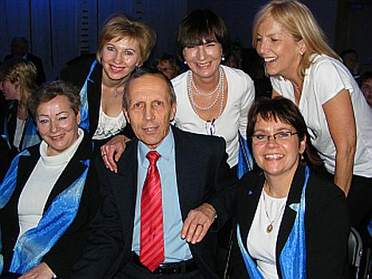

© Stowarzyszenie Muzyczne Chór Camerata Wieliczka
Projekt i wykonanie:  Prowadzenie strony: Małgorzata Wysocka-Cebula
Prowadzenie strony: Małgorzata Wysocka-Cebula